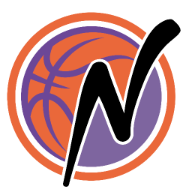

Muster für den News-Bereich
Hier könnte später ein starkes Beitragsbild stehen. Für Google Discover und Google News sind große, hochwertige Titelbilder ein echter Vorteil.
Wer Basketball in Nordhorn ausprobieren möchte, soll auf der Website der NBC Baskets möglichst schnell verstehen, wie ein Einstieg funktioniert. Genau dafür ist ein sauber aufgebauter News-Bereich hilfreich: Er gibt Google und anderen Systemen klare Signale und liefert Menschen gleichzeitig echte Orientierung.
Warum ein News-Format sinnvoll ist
Eine statische Vereinsseite kann viele Basisinformationen gut transportieren. Wenn zusätzlich regelmäßig aktuelle Inhalte erscheinen, entsteht mehr Relevanz für Themen wie Probetraining, Team-Entwicklung, Spielberichte oder Vereinsaktivitäten. Solche Inhalte erhöhen die Chancen, dass die Website nicht nur über direkte Markensuchen, sondern auch über thematische Suchanfragen gefunden wird.
Wie ein guter Vereinsartikel aussehen sollte
Ein brauchbarer News-Beitrag braucht mehr als eine kurze Meldung. Sinnvoll sind ein klarer Titel, eine verständliche Einleitung, ein großes Bild, ein echtes Veröffentlichungsdatum und mehrere informative Absätze. Für lokale Sichtbarkeit ist außerdem wichtig, dass Begriffe wie Basketball in Nordhorn, Probetraining oder Jugendbasketball natürlich im Text vorkommen.
Was dieser Testartikel demonstriert
- eine eigene URL für den Artikel
- eine starke Meta Description
- OpenGraph- und Twitter-Metadaten
- strukturiertes
NewsArticle-Markup - klare interne Struktur für einen künftigen News-Bereich
Nächste Ausbaustufe für NBC
Wenn der Testbereich überzeugt, kann daraus schrittweise ein echter News-Bereich werden. Sinnvoll wären dann Artikel zu Spielberichten, Probetraining, Team-Updates, Veranstaltungen, Jugendförderung oder vereinsinternen Entwicklungen. Wichtig ist dabei, Qualität vor Masse zu stellen.